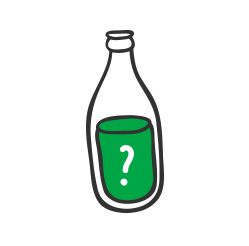
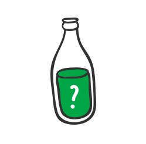

"예방은 치료보다 낫다"는 사실에 유념하여 농약을 사용할 때에는 중독사고예방을 위해 노력 해야 한다. 농약은 신체와 접촉하여 국부 장애를 일으킬 수 있고 신체 내로 들어가서는 중독 장애를 유발할 수 있으므로 농약이 체내로 들어갈 수 없도록 예방조치를 철저히 하여야 한다. 농약은 다음 3가지 경로로 신체 내로 들어갈 수 있다.
피부투과
인체의 피부는 완벽한 보호 장벽으로 작용하지는 못하여 농약이 피부에 묻으면 신체 내로 흡수될 수 있다.
가능한 한 피부 접촉을 피하여야 한다.
피부 오염시는 노출 부위를 깨끗이 닦아야 한다.
마심
농약 본래 용기라 할지라도 포장지가 떨어진 것은 반드시 포장지를 다시 붙여 보관토록 한다.
농약을 취급할 때는 음식물을 먹거나 음료수 등을 마시지 말고 흡연을 삼가한다.
음식물에 농약이 묻지 않도록 주의한다.
농약용 빈 용기를 음식물 보관용으로 사용해서는 안된다.
반대로 음식용 용기를 농약 보관용으로 사용해서도 안된다.
농약보관소나 작업장 및 살포 장소에는 어린이의 접근을 막아야 한다.
흡입
악천후일 때는 사고의 위험이 높으므로 무리하여 작업하지 않는다.
점검, 정비
농약 중에는 체형에 따라 취급 시 호흡을 통해 폐로 흡수될 수 있는 가스나 분말이 되는 것도 있다.
농약 살포액 준비는 야외에서, 환기가 잘 되는 곳에서 하도록 한다.
농약용기 개방 시에 특히 수화제의 개봉시에 세심한 주의를 기울여야 한다.
농약을 따를 때 세심한 주의를 해야 한다.
분무기를 깨끗이 유지 보관토록 하고 고장이 생겼을 때 입으로 빨거나 부는 일이 없도록 한다.
물
물은 살포액으로 만드는데 꼭 필요할 뿐만 아니라 농약으로 오염된 눈을 씻는데도 필수적이다. 따라서, 깨끗한 물을 충분히 준비하도록 한다.
비누
농약이 묻은 부분을 닦아낼 때 사용할 비누를 준비한다.
옷
물을 쉽게 이용할 수 없는 경우에는 마르고 깨끗한 옷과 농약을 훔쳐낼 화장지 등을 충분히 준비한다.
담요
충격(쇼크)시에 덮거나 환자를 운반하는데 유용하다.
활성탄
농약을 삼켰을 때에 유용하다
플라스틱 용기
오염된 옷과 신발의 보관에 사용된다.
응급조치 계획수립
사고시를 가정하여 적절한 치료를 받을 수 있는 가장 빠른 방법과, 환자를 진료소 및 병원까지 운반하는데 필요한 계획을 세워두어야 한다.
중독의 예방
농약중독은 통상 급성적이며 대체로 과대 피부 접촉 및 과대 흡입시 발생된다. 만약 어떤 사람이 농약에 중독되었다고 판단될 때는 즉시 응급조치를 취하고 의사의 치료를 받아야 한다. 농약의 중독 증상은 농약의 여러 가지 제형 및 흡수 경로의 차이로 여러 형태로 나타날 수 있다. 기타 질병 및 고열로 인한 증상도 농약의 중독과 유상하게 보일 수 있다. 따라서 가능하면 의사의 진료를 받는 것이 중요하다.
다음에 설명한 증상들이 나타나면 농약 중독일 가능성이 있으니 즉시 주의를 기울여 관찰하여야 한다.
농약중독 증상
1. 전경신 : 극히 무기력하고 피곤함을 느낌
2. 피경부 : 자극성, 화상, 과도한 땀흘림, 지저분해짐
3. 신눈경 : 가려움, 화상, 눈물, 잘 보이지 않거나 침침함, 동공축소 또는 확대
4. 소화계 : 구강 및 인후화상, 과도한 침분비, 구역질, 구토, 복통, 설사
5. 신경계 : 두통, 현기증 혼미, 분안정, 근육경련, 비틀걸음, 분명치 않은 언사(말을 더듬음), 발작, 무의식
6. 호흡계 : 기침, 흉통, 흉부압박, 호흡곤란, 숨을 헐덕임
어떤 사람의 신체적 상태가 농약중독과 관련 있는지를 판단하기 어려울 때는 현재 앓고 있는 기타 질병의 가능성도 고려하는 등 입수 가능한 모든 정보를 이용하는 것이 중요하다.
문의
관계 있는 사람 또는 같이 작업하던 사람에게 농약과의 접촉이 있었는지 또는 어떤 농약으로 작업을 하였는지 물어본다.
무슨 제품을 얼마만 한 양으로 다뤘는지 , 무슨 보호의를 사용하였는지, 어떤 중독 증상이 나타났는지, 술을 마셨거나, 약을 먹었는지 등을 알아본다.
관찰
농약용기, 포장지, 살포 기구 등은 점검하고 모든 포장지를 주의 깊게 살펴보고 보관한다.
땅이나 옷 위에 엎질렀거나 노출된 흔적이 있는가 살펴본다.
살포 기구의 고장이나 잘못 사용한 경우는 없는가 살펴본다.
환자의 상태를 관찰한다.
냄새
대부분의 농약은 많은 양이 오염되었을 때 쉽게 알 수 있을 정도로 특수한 냄새가 있으므로 냄새를 잘 맡아보도록 한다.
농약과의 과도한 접촉이 의심되면 응급조치를 먼저 취하고 가능한 한 빨리 의사의 치료를 받아야 한다.
의사나 진료소에 환자의 중독 내력, 관찰 사항, 농약 포장지 내용 등을 알려주도록 하고 반면에 질병이 의심되면 평상시처럼 의사의 진료를 받고 담당 의사에게 사용 농약과 접촉 정보 등을 일러준다.
 

 농약중독 증상
농약중독 증상